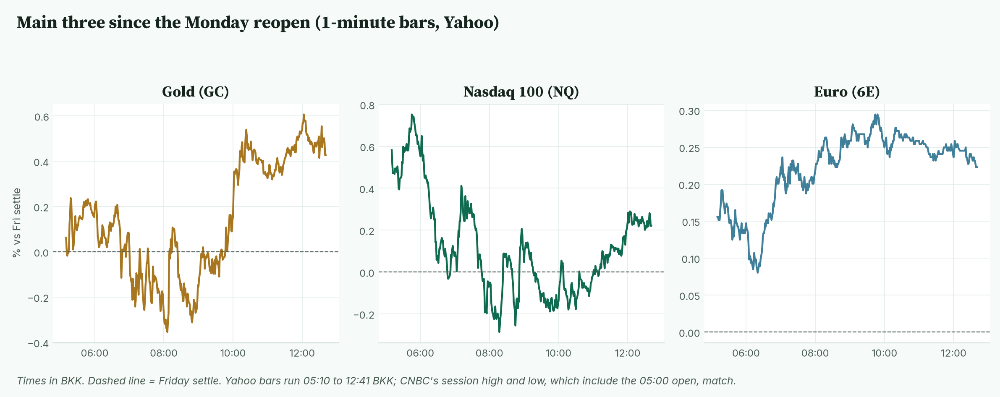
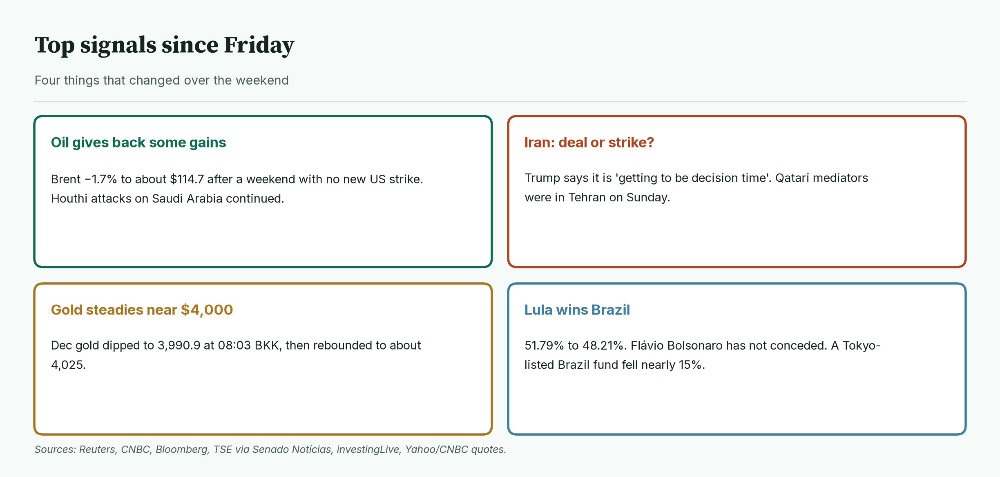
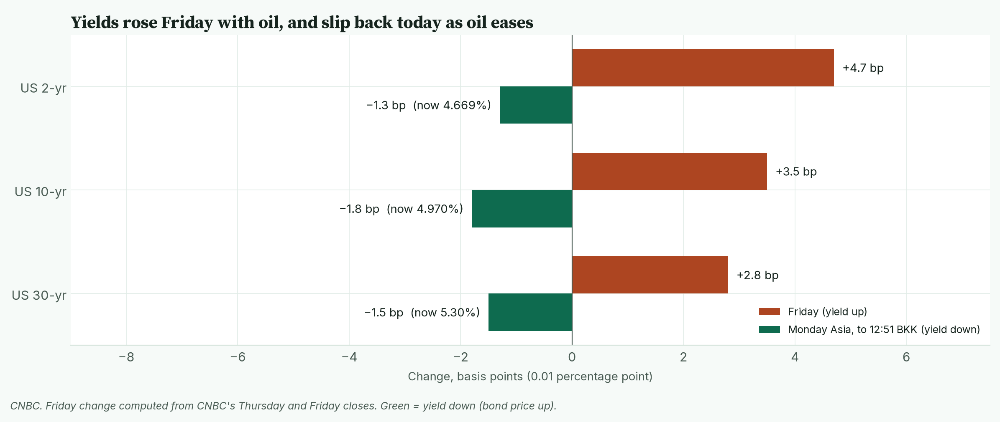
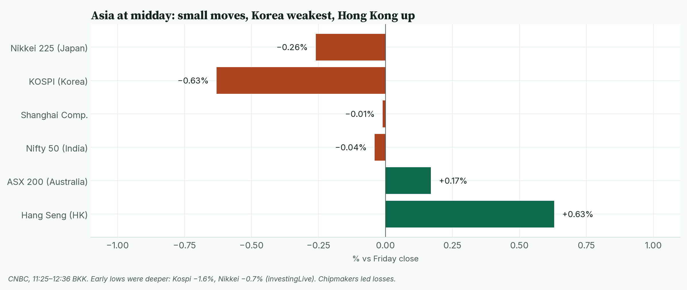
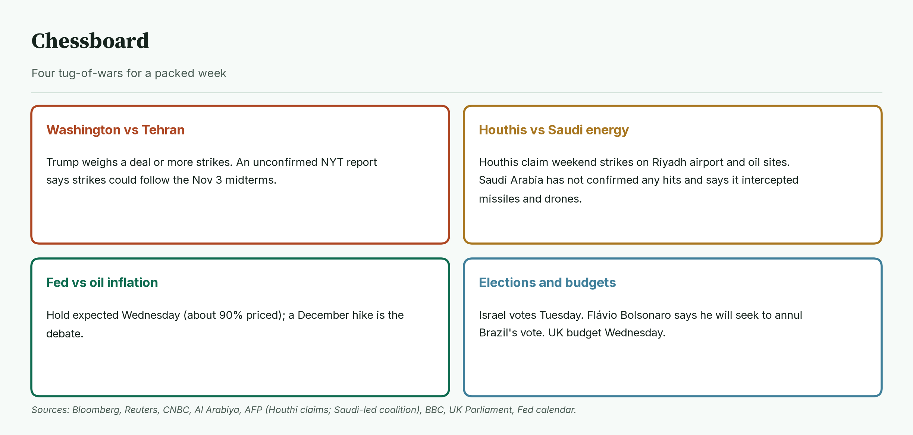
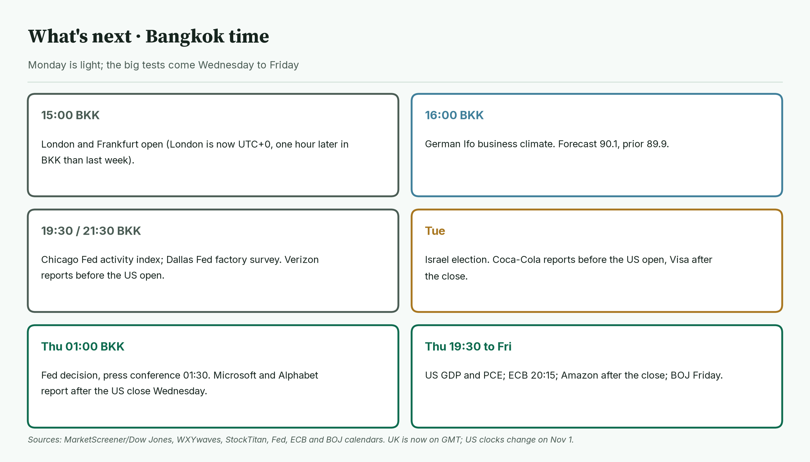
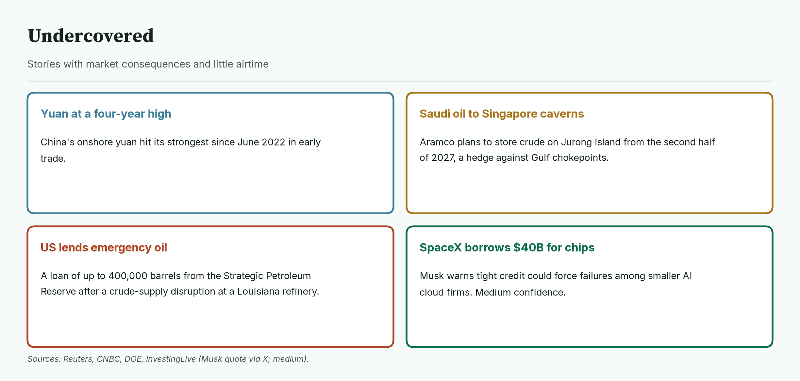
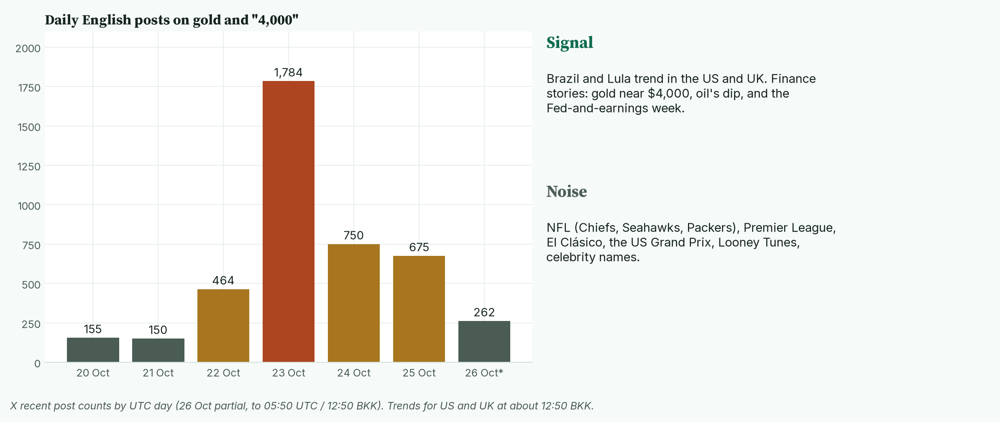

April · Market Intel, pre-London · Mon Oct 26, 2026 · ~12:55 BKK / ~05:55 London
Headline: oil is easing after a weekend with no new US strike on Iran. Brent is down 1.7% to about $114.7. Gold is steadying near 4,000 after its worst week since June, and Nasdaq futures are up 0.2%.
Lula won Brazil's runoff, and Trump says it is "getting to be decision time" on Iran. So what: this week brings the Fed, the ECB, the Bank of Japan, and Microsoft, Alphabet and Amazon earnings. Today is quiet, so Iran headlines and Germany's Ifo survey at 16:00 BKK set the tone.
Clock note: UK clocks went back on Sunday. London is now UTC+0, so the London open is 15:00 BKK, one hour later than last week. US clocks change on Nov 1.
1) Main instruments The three main contracts since Monday's reopen, as a % move from Friday's settle. Gold and Nasdaq both bottomed around 08:00 BKK; gold turned up sharply from about 09:30 BKK. |
(Futures are contracts that trade nearly around the clock, so they show the mood before stock markets open. Quotes are from the Yahoo Finance futures feed at 12:40–12:41 BKK (05:40 UTC), about 10 minutes delayed, and match CNBC. The market reopened at 05:00 BKK. Yahoo's 1-minute bars start at 05:10 BKK; I checked and Yahoo has no bars from 05:00 to 05:09. CNBC's session high and low, which include the open, match the ranges below.)
- Gold futures (GC, Dec): 4,025.0, +0.43%, at 12:40 BKK. Driver: cheaper oil eases fears of more interest-rate hikes, and gold pays no interest, so it gets a small lift. Friday's settle was 4,007.9 (Yahoo and CNBC). Today's range is 3,990.9 (08:03 BKK) to 4,032.9 (12:04 BKK).
- Nasdaq 100 futures (NQ, Dec): 29,182.00, +0.22%, at 12:41 BKK. Driver: lower oil helps, but Asian chip stocks are falling before the big AI earnings. The settle was 29,117.75. Today's high is 29,345.00 (05:45 BKK); the low is 29,027.50 (08:17 BKK).
- Euro futures (6E, Dec): 1.1241, +0.22%, at 12:40 BKK. Driver: the dollar is slightly softer. The settle was 1.1216. Today's range is 1.1225 (06:19 BKK) to 1.1249 (09:44 BKK). Spot euro is 1.1215, +0.12% (CNBC, 12:51 BKK). The futures gain looks bigger partly because Friday's settle was taken at a soft moment.
- Takeaway: all three are calm and slightly higher; gold has bounced about 34 points off its 08:03 BKK low.
Context. The dollar index (DXY, the dollar against six major currencies) is 101.71, −0.10% (CNBC, 12:51 BKK). The 10-year US yield (what the US government pays to borrow for 10 years) is 4.97%, down 1.8 basis points (CNBC, 12:51 BKK; a basis point is 0.01 percentage point). The VIX (the "fear gauge" built from S&P 500 option prices) closed Friday at 19.45, +2.21% (Cboe). US oil (CL, December) is 101.17, −2.03% (12:41 BKK). Brent (December) is 114.74, −1.70% (CNBC, 12:41 BKK) after settling at $116.72 on Friday. S&P 500 futures (ES) are 7,679.75, +0.26% (12:41 BKK). Bitcoin is $80,140, +0.13% since 00:00 UTC (Yahoo, 12:51 BKK).
2) Top signals Four weekend changes. Oil eased, Iran is at a decision point, gold steadied and Brazil re-elected Lula. |
- Oil eases. No new US strike over the weekend, so some of the war premium came out. Houthi attacks on Saudi Arabia went on. (High: Reuters, CNBC)
- Iran at a fork. Trump told Fox News it is "getting to be decision time": a deal, or "finish it off." (High: Bloomberg)
- Lula wins. 51.79% to 48.21%. Flávio Bolsonaro has not conceded. (High: Brazil's electoral court via Senado Notícias; BBC)
- Takeaway: the oil scare paused, but the week's big decisions are still ahead.
3) Rates, FX and oil US yields rose on Friday as oil climbed, and are slipping back in Asia as oil eases. |
- Friday's US yield closes: 2-year 4.682%, 10-year 4.988%, 30-year 5.315% (CNBC). That was a rise of about 3 to 5 bp after Thursday's big fall.
- Now: 2-year 4.669%, 10-year 4.97%, 30-year 5.30% (CNBC, about 12:50 BKK).
- Mentor: bond prices rise when yields fall. Oil matters here because pricey oil feeds inflation, and inflation pushes the Fed toward hikes.
- Fed. Traders price about a 90% chance of a hold on Wednesday at 3.75% to 4.00% (fed funds futures, via Bloomberg/NDTV Profit). Nearly all economists in a Reuters poll expect a hike in December.
- FX. The yen is at 157.08 per dollar (CNBC, 12:51 BKK). China's onshore yuan hit its strongest since June 2022 (investingLive).
- Oil. Brent's range today is 114.00 to 115.97; WTI's is 100.69 to 102.63 (CNBC). Qatari mediators were in Tehran on Sunday (Reuters). On Oct 23 the Energy Department authorised an emergency exchange, in effect a loan, of up to 400,000 barrels from the reserve's West Hackberry site, after a disruption to crude deliveries at Phillips 66's Lake Charles refinery in Louisiana (DOE).
- Takeaway: oil is the lever. Cheaper oil today means slightly lower yields and a slightly softer dollar.
4) Why it matters Asia at about 11:25–12:36 BKK. Moves are small; Korea is weakest, and Hong Kong is up. |
Friday's selling moved from tech to the rest of the market.
- The Dow fell 1.23% to 52,215.16. The S&P 500 fell 0.52% to 7,623.68. The Nasdaq Composite fell only 0.21%. (CNBC, Reuters)
- American Express fell more than 3% after cutting about 5% of jobs to "prepare for AI" (CNBC).
- In Asia, chipmakers led losses. Tokyo Electron fell as much as 4% and was down 2.7% at about 12:45 BKK (Yahoo). Korea's Kospi has lost almost 19% this month (Reuters).
- A Tokyo-listed Brazil stock fund fell nearly 15% after Lula's win (investingLive).
- Mentor: this week, three "hyperscalers" (giant cloud companies) report. They spend the most on AI data centers, so their results test the whole AI trade.
- Takeaway: for Nasdaq, Microsoft and Alphabet on Wednesday night US time matter more than anything today.
5) Chessboard Four tug-of-wars for a packed week. Iran is the one that can move oil, gold and Nasdaq at once. |
- Washington vs Tehran. Trump weighs a deal or more strikes. Saudi, Turkish and Pakistani officials were expected in Tehran on Monday (Reuters sources, via investingLive). A New York Times report that strikes could follow the Nov 3 midterms is not confirmed.
- Houthis vs Saudi energy. On Saturday the Houthis claimed missile and drone strikes on Riyadh's airport, an Aramco site in Yanbu, the Rabigh refinery and oil pipelines, and on Sunday they claimed another strike on Riyadh's airport. Saudi Arabia has not confirmed any hits and says it intercepted missiles and drones. (Medium: Houthi claims, unconfirmed; Reuters, CNBC, AFP, Al Arabiya)
- Fed vs oil inflation. A hold is expected, but oil keeps a December hike alive. (High: Reuters poll)
- Elections and budgets. Israel votes Tuesday. Flávio Bolsonaro says he will seek to annul Brazil's result (BBC). The UK budget is Wednesday (UK Parliament).
- Takeaway: the biggest risk is a sudden Iran decision; everything else is scheduled.
6) Leading indicators (BKK times) Today is light. The big tests are the Fed early Thursday BKK, then US inflation data and the ECB on Thursday evening BKK. |
- 15:00: London and Frankfurt open.
- 16:00: Germany's Ifo business survey (a monthly poll of German firms). Forecast 90.1, prior 89.9 (MarketScreener/Dow Jones).
- 19:30: Chicago Fed activity index. 21:30: Dallas Fed factory survey. Verizon reports before the US open (StockTitan).
- 20:30: US stock market opens.
- Tuesday: Israel's election.
- Thursday 01:00: Fed decision, press conference 01:30. Microsoft and Alphabet report after Wednesday's US close.
- Thursday 19:30: US GDP and PCE inflation (the Fed's preferred price gauge). 20:15: ECB decision. Amazon reports after the US close. Friday: Bank of Japan.
- Levels to watch: GC 3,990.9 and 4,032.9. NQ 29,027.50 and 29,345.00. 6E 1.1225 and 1.1249. 10-year 5.00%. Brent 114.00.
- Takeaway: today's deciders are Iran headlines and the Ifo at 16:00 BKK.
7) Undercovered Four stories with little airtime. Each touches oil supply, China's currency or AI funding. |
- China's yuan is at a four-year high. Onshore, it hit its strongest since June 2022 in early trade. (High: Reuters)
- Saudi oil is heading to Singapore caverns. Aramco plans to store crude on Jurong Island from the second half of 2027. (High: Reuters, CNBC)
- The US is lending emergency oil. The Energy Department approved a loan of up to 400,000 barrels to Phillips 66's Lake Charles refinery after a crude-delivery disruption. Phillips 66 expects no impact on operations. (High: DOE, Reuters)
- SpaceX reportedly closed $40 billion in debt for AI chips. Musk warned tight credit could sink smaller AI cloud firms. (Medium: investingLive, citing Musk on X; not checked against a filing)
8) What's trending on X (~12:50 BKK) Daily English posts mentioning gold and "4,000", plus today's trends sorted into signal and noise. Gold talk spiked to 1,784 posts on Oct 23 and has cooled since. |
- US: Brazil, Chiefs, Lula, Eric Bauza, Mahomes, Seahawks.
- UK: Carrick, Brazil, Lula, #MUNBOU, Wetherspoons, #USGP.
- Signal: Brazil's vote trends in both countries. X finance stories focus on gold near $4,000, oil's dip and the Fed-and-earnings week (Medium: X news summaries).
- Mood, not evidence: chart watchers argue over a gold "bear market" versus a pullback. A viral claim that Trump must strike Iran before Israel's vote is speculation.
- Data point: posts on gold and "4,000" jumped from about 150 a day to 1,784 on Oct 23, then fell to 675 on Oct 25. (X post counts)
- Noise: NFL, Premier League, El Clásico, Formula 1, Looney Tunes and celebrity names.
Bottom line
Oil's pause gives markets a calm Monday, but nothing has been settled. For Jim: gold needs to stay above 3,990.9, today's low, and clear 4,032.9 to extend the bounce. Nasdaq at 29,182 sits mid-range; 29,027.50 is the floor before the earnings. The euro is near the top of a tight 1.1225 to 1.1249 range, and the Ifo at 16:00 BKK can break it. Interpretive note: in weeks with big scheduled events, Monday ranges often stay tight while traders wait. A surprise Iran headline is the main way that breaks. That is a read, not a forecast.
Confidence: Futures levels: high for direction, medium-high for the exact tick (Yahoo feed; settles and session ranges match CNBC). Yahoo 1-minute bars begin at 05:10 BKK; CNBC's full-session high and low match for GC, NQ and 6E. US closes and yields: high (CNBC, Reuters). Brent: CNBC December contract; Yahoo's Brent symbol has rolled to a later month, so it was not used. Fed odds: medium (fed funds futures via Bloomberg/NDTV Profit). Houthi attack claims: reported by Reuters, partly unconfirmed. NYT Iran-strike report: not confirmed. SpaceX debt: medium. X news summaries: medium.
Charts: /workspace/april-charts/2026-10-26/pre-london-{scoreboard,main3,signals,rates,asia,chess,leading,under,xsplit}.png |